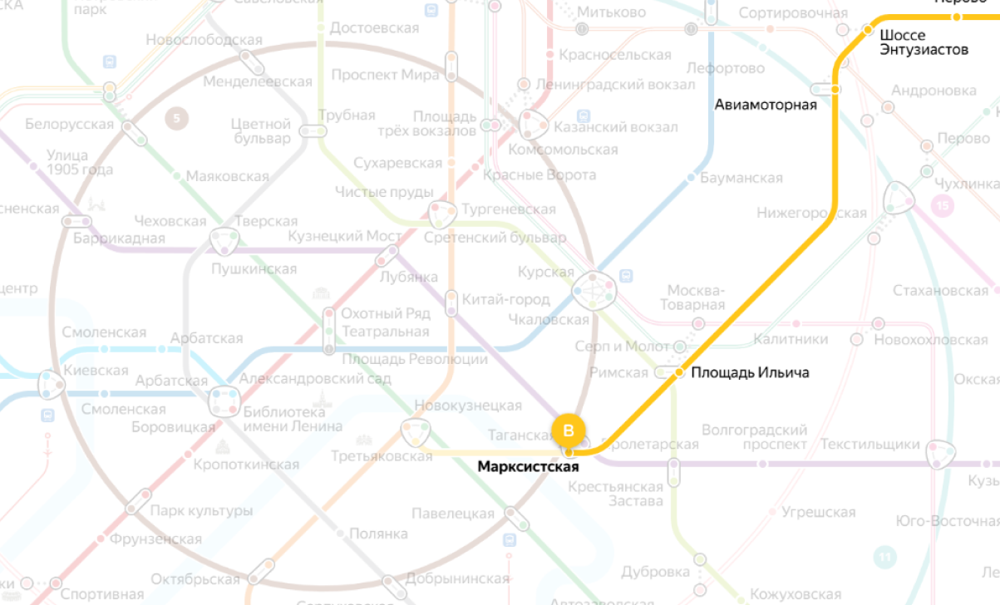
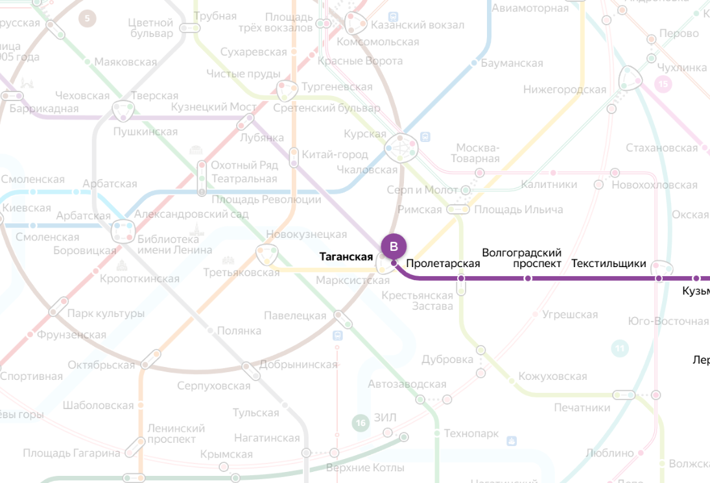
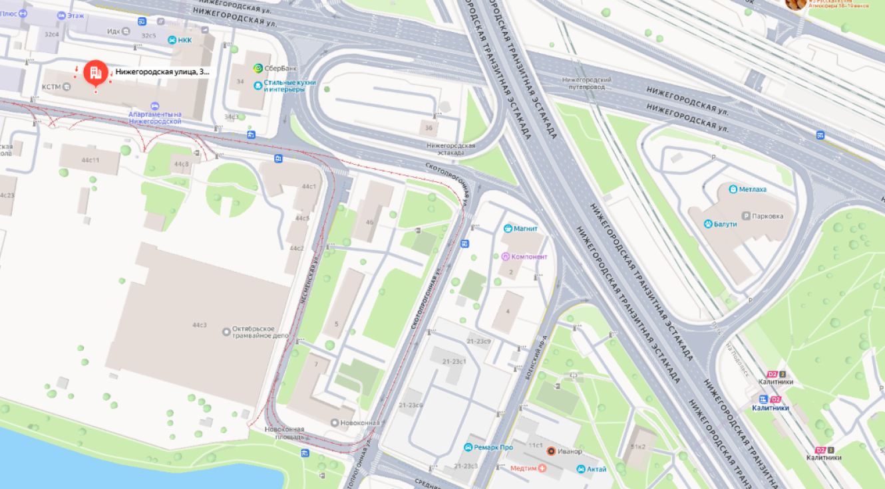

Как добраться до колледжа

Адрес колледжа : Нижегородская улица, 32с16
Способы добраться:
Ближайшие станции метро — Таганская/Марксистская и Нижегородская.
Какая из них удобнее, зависит от вашего маршрута.
От станции Таганская/Марксистская: садитесь на любой автобус, кроме Е70.
От станции Нижегородская: садитесь на любой автобус, кроме Е70, также подходит автобус 805.


После выхода из подземки следуйте по указателям в направлении Нижегородской улицы — просто идите прямо, ориентируясь на основные улицы и здания вокруг. Колледж расположен примерно в 10-15 минутах спокойного пешего пути, так что доехать можно без проблем, даже если вы впервые в этом районе.

Перед тем как дойти до здания колледжа, нужно пройти ещё одно здание с охраной. Там нужно предъявить уже готовый пропуск для студентов и пройти через турникеты. Если пропуска нет, нужно обратиться в администрацию колледжа по горячей линии, подойти к окошку и получить гостевой пропуск.